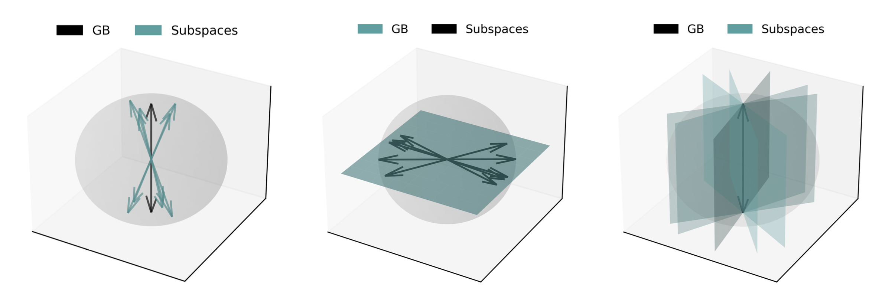

Zeyu Li （郦泽雨）
Statistics · Machine Learning · Finance
About Me
I am a Zhishan Postdoctoral Fellow in the School of Statistics and Data Science at Southeast University, working with Prof. Xinbing Kong. I received both my bachelor's degree and my Ph.D. from Fudan University, where I was advised by Prof. Xinsheng Zhang. I was also a visiting Ph.D. student at the National University of Singapore, working with Prof. Wang Zhou.
My research spans high-dimensional spectral methods and financial AI. I also work with industry partners to automate commodity pricing, study trading and arbitrage in electricity markets, and develop reinforcement learning environments for financial agents.
Multi-source Spectral Methods
I study how spectral information can be combined across heterogeneous datasets to learn shared structure while preserving source-specific variation. My work draws on factor models, tensor learning, and random matrix theory, with an emphasis on robust estimation, transfer learning, and distributed computation.

- Robust two-way dimension reduction by Grassmannian barycenter
- Knowledge transfer across multiple principal component analysis studies
- Representational transfer learning for matrix completion
- Simultaneous estimation and dataset selection for transfer learning in high dimensions by a non-convex penalty
- Few-round distributed principal component analysis: Closing the statistical efficiency gap by consensus
- Optimal personalized subspace learning for multi-view tensor observations
Financial Artificial Intelligence
My current work develops structured generative models and attention-based methods for tensor data and asset pricing. Looking ahead, I aim to connect these tools with high-dimensional portfolio construction, high-frequency finance, and multimodal financial data, combining statistical structure with flexible learning methods.
Selected Talks
- Distributional Counterfactual Inference by Conditional Tensor Diffusion Model
Frontiers Forum on Bayesian Statistics and Artificial Intelligence, Fudan University, Shanghai - Tucker diffusion for high-dimensional tensor generation
4th Joint Conference on Statistics and Data Science in China, Guiyang - Generating Tensor Factor Structure with Diffusion Model via Tucker U-net
Annual Meeting of the Young Statisticians Section, Southwestern University of Finance and Economics, Chengdu - Knowledge transfer across multiple principal component analysis studies
10th National Postgraduate Forum on Statistics, Renmin University of China, Beijing
Industry Projects
- Arbitrage between day-ahead and real-time electricity markets
Subproject Co-Lead, Jiangsu Zhongyuan Electricity Sales Company
August 2026 – August 2027 - Reinforcement learning environments for financial agents
Project Co-Lead, MS Consumer Finance
April 2026 – April 2027 - Automated pricing of bulk commodities
Senior Algorithm Engineer, China Energy Investment Corporation (CHN Energy)
September 2024 – January 2025
Awards & Honours
- Jiangsu Outstanding Postdoctoral Program, Category A (2026–2027). One of 200 Category A recipients province-wide.
- Elite Doctoral Program for Outstanding Researchers, School of Management, Fudan University (2021–2025). A direct-entry Ph.D. track whose entrants ranked, on average, in the top 10% of their undergraduate majors.